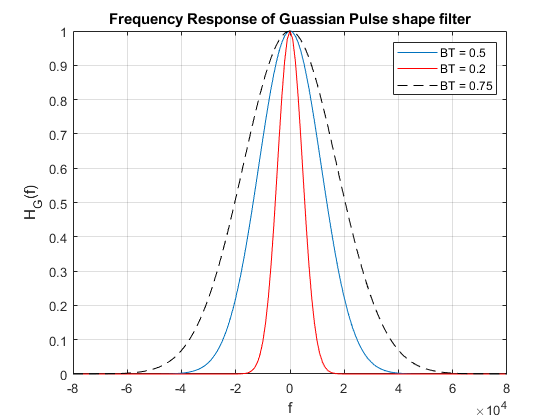
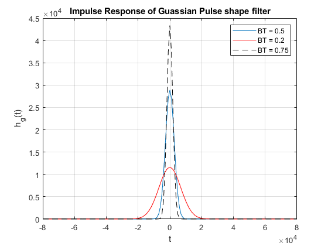
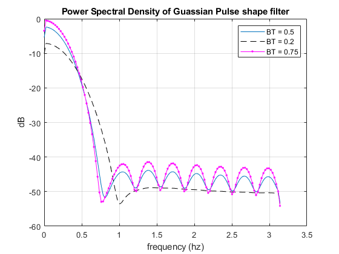

Contents
HW5
Teacher : Doctor_Mohammadi Author: [SeyedAli] - [SeyedHosseini] E-mail: [alishosseini79@aut.ac.ir]
%Student-Number : [9723042] % University: Amirkabir University of Technology
Q 3
Clear recent data
clc;
close all;
clear;
Initialization
clear;
clc;
Rs = 19.2e3 ; %Symbol Rate
BTs = [0.5 , 0.2 , 0.75] ;
Ts = 1/Rs ;
B = BTs/Ts ;
alpha = 1.1774./(2*B) ;
f = -8 : 0.1 : 8 ;
f = 1e4.*f ;
t = -4 : 0.05 : 4 ;
t = 1e-4.*t ;
Claculation
Hg = zeros(length(BTs),length(f)); hg = zeros(length(BTs),length(f)); for i = 1 : 3 Hg(i,:) = exp((-alpha(i)^2).*(f.^2)); hg(i,:) = (sqrt(pi)/alpha(i)).*(exp((-(pi^2)/(alpha(i)^2)).*(t.^2))); end clc;
Plotting
figure(1) plot(f,Hg(1,:));hold on plot(f,Hg(2,:),"-r");hold on plot(f,Hg(3,:),"--k");hold on title("Frequency Response of Guassian Pulse shape filter") % axis([0 7 -1.5 1.5]) xlabel ('f') ylabel('H_G(f)') grid on legend('BT = 0.5','BT = 0.2','BT = 0.75') figure(2) plot(f,hg(1,:));hold on plot(f,hg(2,:),"-r");hold on plot(f,hg(3,:),"--k");hold on title("Impulse Response of Guassian Pulse shape filter") % axis([0 7 -1.5 1.5]) xlabel ('t') ylabel('h_g(t)') grid on legend('BT = 0.5','BT = 0.2','BT = 0.75') 
PSD
clc; figure(3) [px , f] = pwelch(Hg(1,:),20); plot(f,10*log10(px));hold on [px , f] = pwelch(Hg(2,:),20); plot(f,10*log10(px),"-- k");hold on [px , f] = pwelch(Hg(3,:),20); plot(f,10*log10(px),".- m"); title("Power Spectral Density of Guassian Pulse shape filter") % axis([0 7 -1.5 1.5]) xlabel ('frequency (hz)') ylabel('dB') grid on legend('BT = 0.5','BT = 0.2','BT = 0.75')